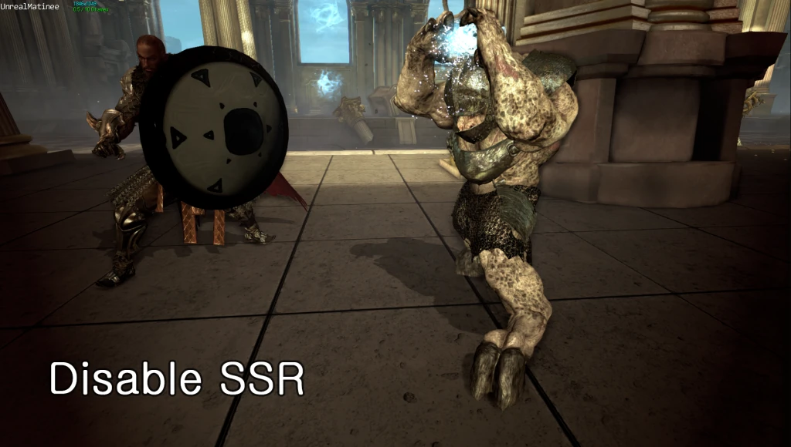
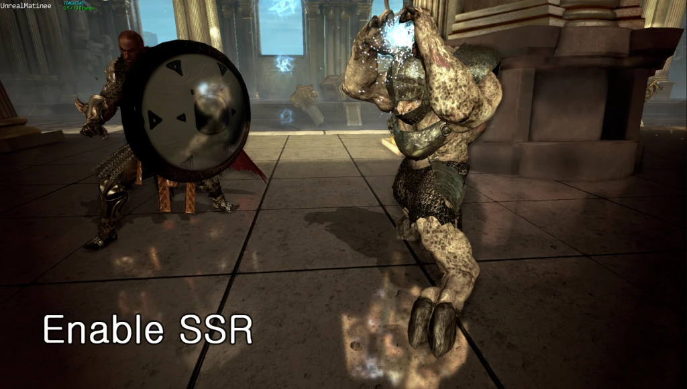
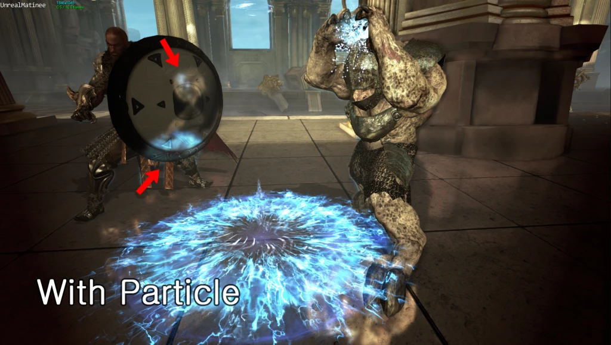
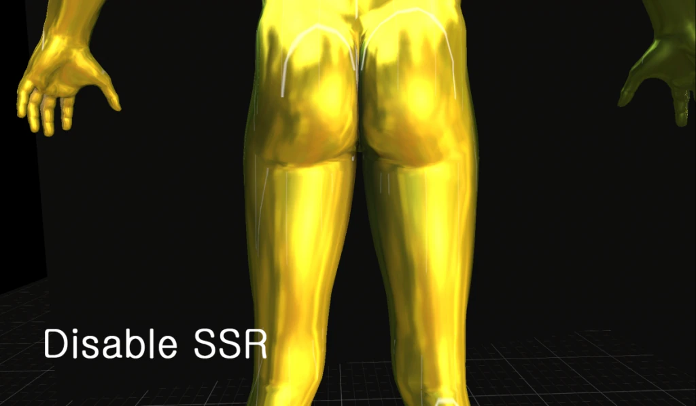
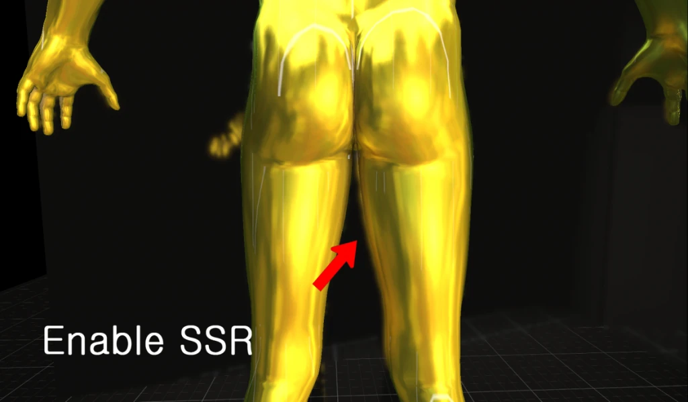
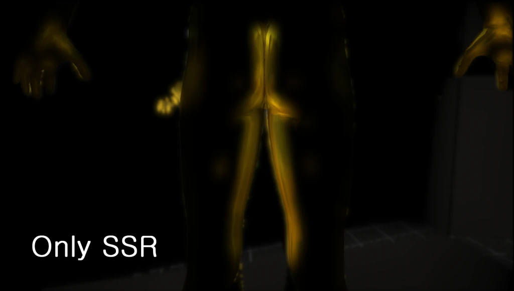
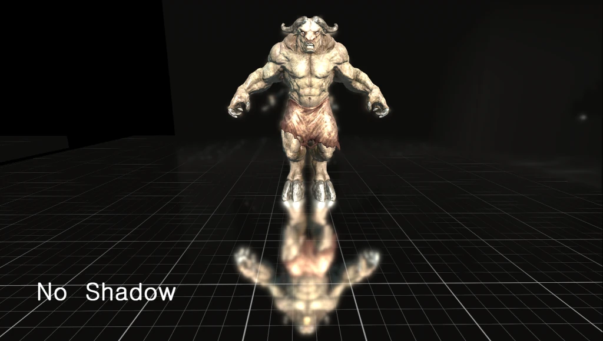
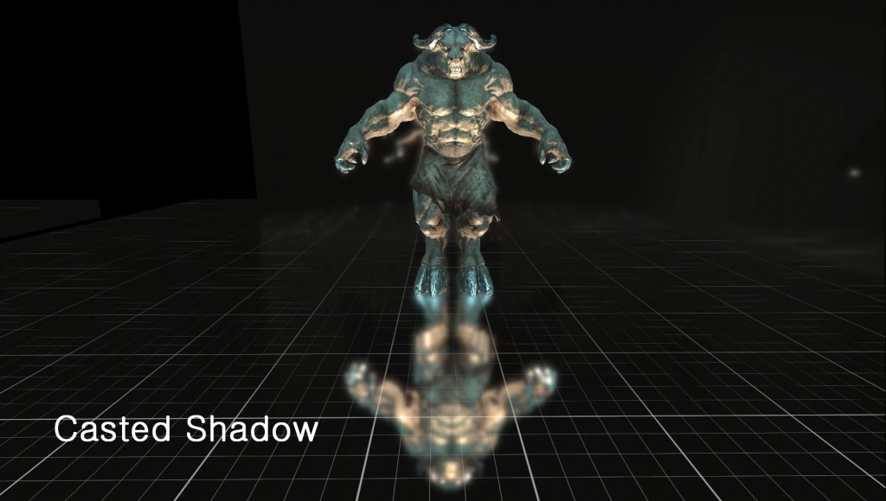
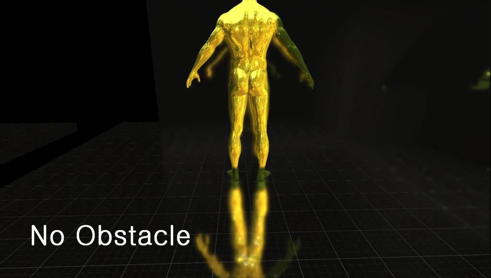
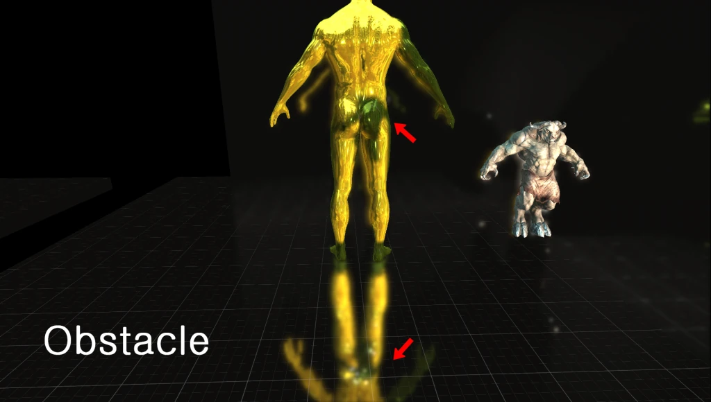

Screen Space Reflection

Screen Space Reflection(SSR) is also Known as Real-time local reflection. After I saw Screen Space Reflection in the KILLZONE’s demo video, I decided to apply it to UE3 as post-process effect.
I referenced presentation of KILLZONE and Crytek Engine3.
I had to write uc, cpp and usf files for SSR because it was not enough to implement some techniques such as getting screen world position information, Gbuffer for roughness.
To represent roughness, I used 5 downsampled textures derived by an origin texture.

Of course, Its blur effection is changed with along the roughness in material.
For an easy accessibility, I added SSR as an independent module in post-process.


  


  


<Self reflection>
   


<Reflection with shadow>
Releated